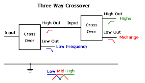
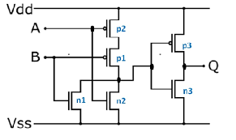
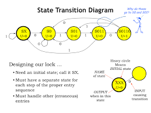

Electrical Engineering Projects
Three Way Crossover Network
March 2018 - April 2018
Goal: Design Three Way Crossover Network
Actions:
Designed three way crossover network for stereo speaker system, selecting specific capacitor and inductor values to produce best response for desired frequency range Derived transfer function for high, low, and bandpass filters as a base for all remaining design Utilizing both Matlab and Python, drafted Bode Plots for all three filters required in crossover network Drafted and simulated design schematic using LTSPICE to produce, a magnitude and phase bode plot for the output of each filter, and the differential magnitude of voltage plot between all filters involved
View and Download the Project
Github Link - Including Reports
CMOS Equation Solver
April 2019 - May 2019
Goal: Design CMOS Equation Solver that will work for any boolean equation
Actions:
Designed and simulated CMOS circuit to produce all possible values of any given boolean expression Designed reference inverter based on unique values of capacitive load, propagation delay and transistor sizing Redesigned circuitry to produce MOSFET centered minimum area circuit design Simulated and analyzed transient response of output voltage for all designed circuits utilizing LTSPICE
View and Download the Project
Github Repository Link
Combination Lock - Digital Logic Design
November 2017 – December 2018
Goal: Design Combinational Lock that would unlock to specific code given
Actions:
Designed, simulated and implemented a combination lock that would unlock to a specific student ID entered in binary. Designed and implemented incorrect, correct, and entirely correct transition, and coordinated such with indicator LED
View and Download the Project
Github Repository Link